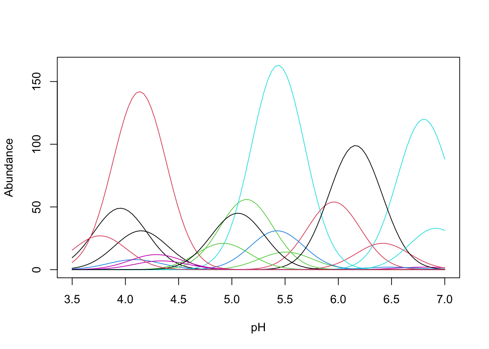
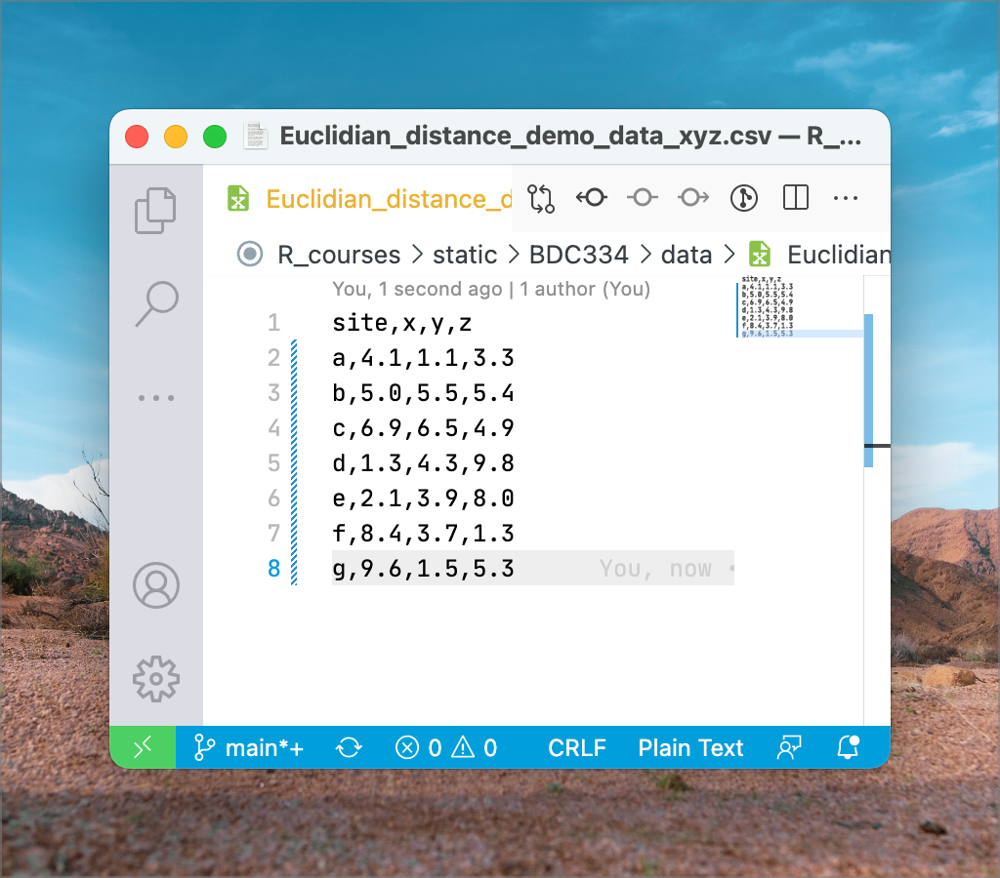
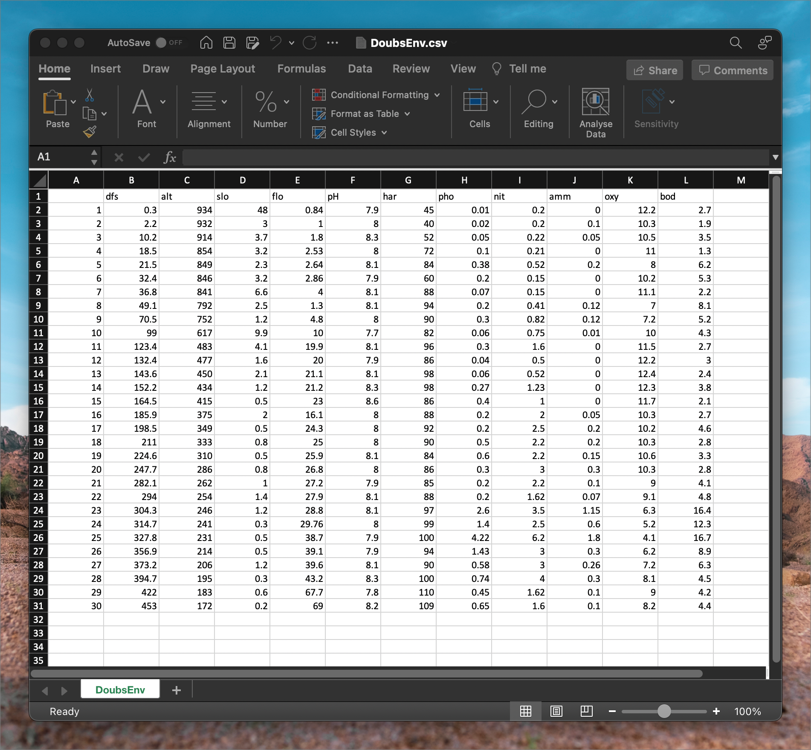
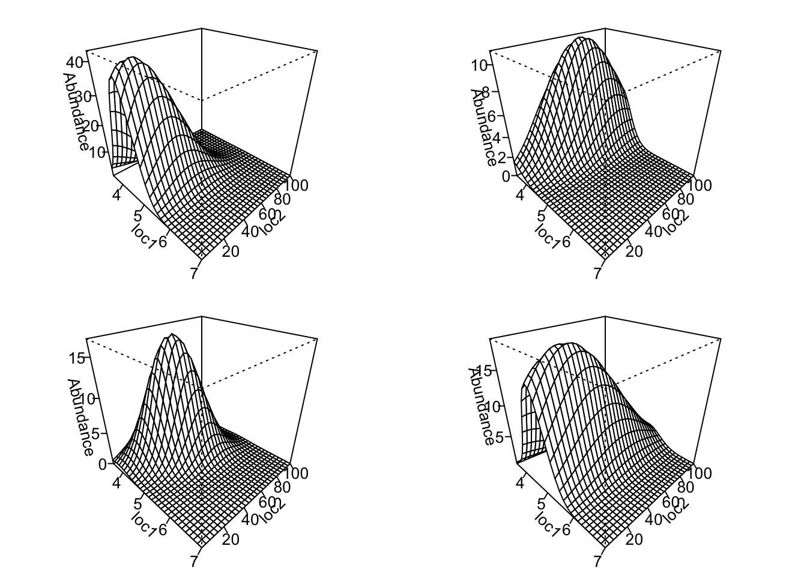
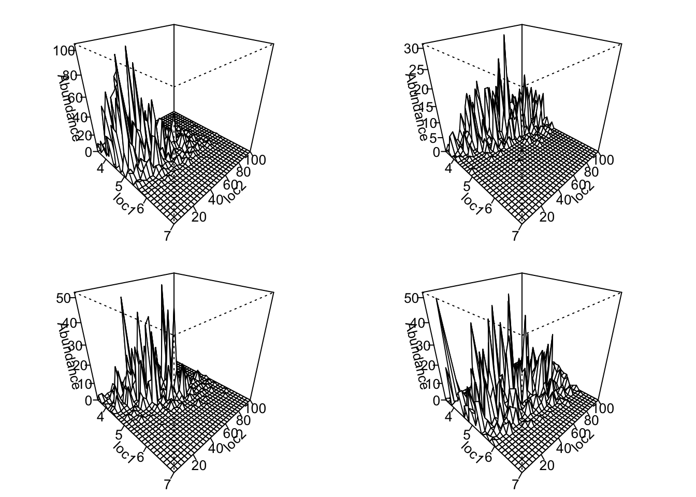
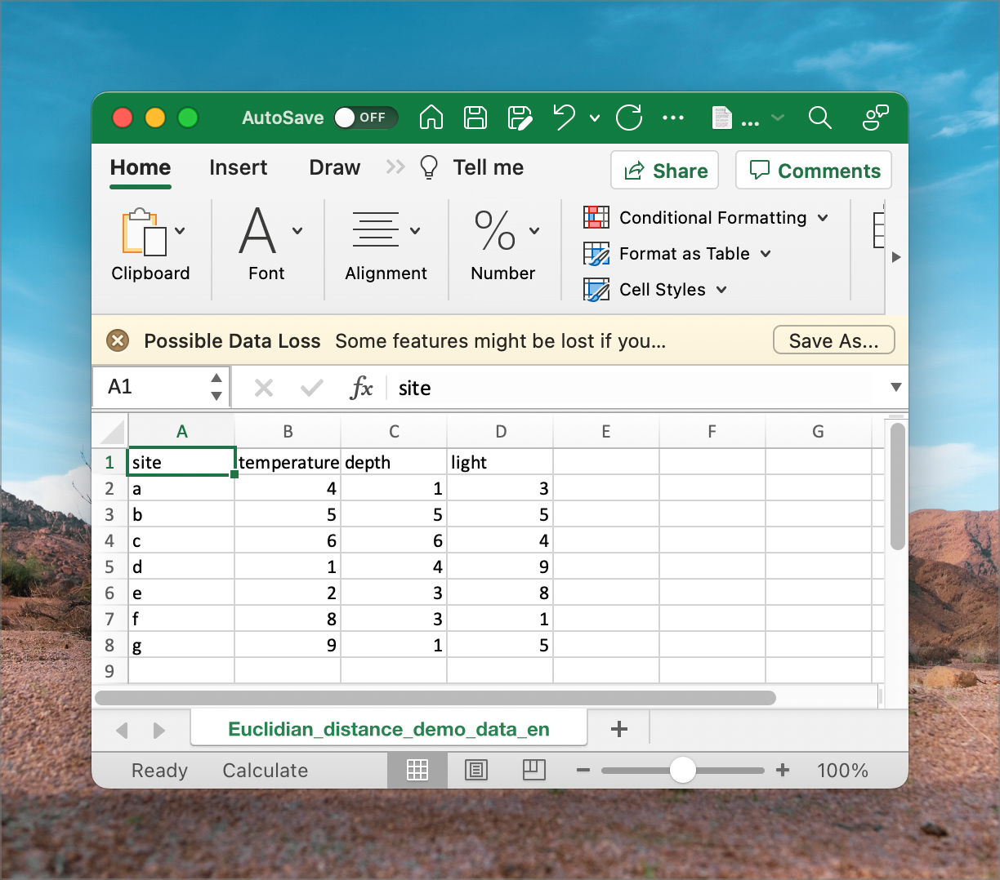
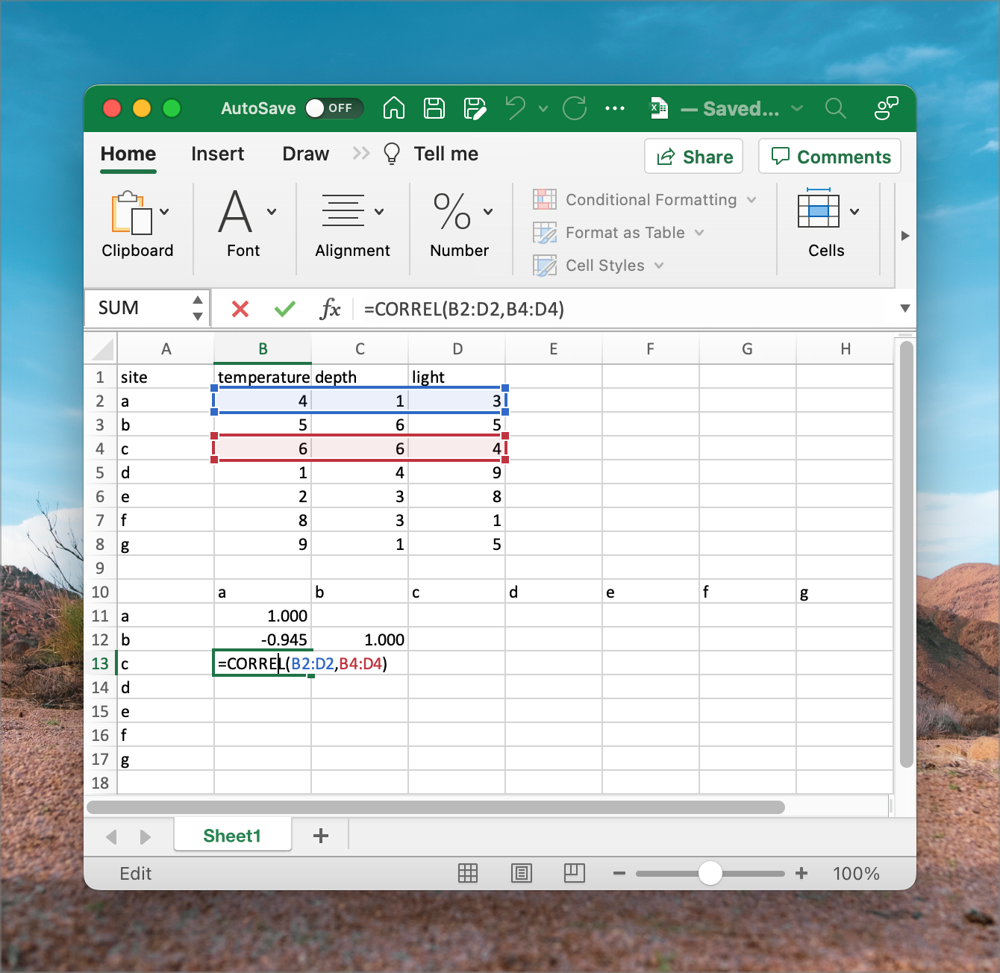

Lab 1
“A scientific man ought to have no wishes, no affections, – a mere heart of stone.”
— Charles Darwin
Macroecology
This is a course about community ecology across different spatial [and temporal] scales. Community ecology underpins the vast fields of biodiversity and biogeography and concerns spatial scales from squares of meters to all of Earth. We can look at historical, contemporary, and future processes that have been implicated in shaping the distribution of life on our planet.
Ecologists tend to analyse how multiple environmental factors act as drivers that influence the distribution of tens or hundreds of species. These data tend to often be messy and statistical considerations need to be understood within the context of the data available to us.
Macroecology is an all-encompassing view of ecology which seeks to find the geographical patterns and processes in biodiversity across all spatial scales, from local to global, across time scales from years to millennia, and across all taxonomic hierarchies (from genetic variability within species, up to major higher level taxa, such as families and orders). It attempts to arrive a unifying theory for ecology across all of these scales—e.g. one that can explain all patterns in structure and functioning from microbes to blue whales. Most importantly, perhaps, is that it attempts to offer mechanistic explanations for these patterns. At the heart of all explanation is also deep insights stemming from understanding evolution (facilitated by the growth of phylogenetic datasets—see below). This is a modern development of ecology, whereas up to 20 years ago the focus has been mostly on populations (the dynamics of individuals of one species interacting among each other and with their environment) and communities (collections of multiple populations, and how they interact with each other and their environment, and how this affects the structure and dynamics of ecosystems).
On a basic data analytical level, population ecology, community ecology, and macroecology all share the same approach as far as the underlying data are concerned. We start with data representing the species and the associated environmental conditions at a selection of sites (called species tables and environmental tables). The species tables are then converted to dissimilarity matrices and the environmental tables to distance matrices. From here basic analyses can offer insights into how biodiversity is structured, e.g. species-abundance distributions, occupancy-abundance curves, species-area curves, distance decay curves, and gradient analyses (as seen in Shade et al. 2018). In the Labs we will explore some of these properties.
Ecological data
Properties of ecological datasets
Ecological data capture properties of the environment and properties about communities. They are typically stored as separate datasets but they analysed together.
These data sets are usually arrange in a matrix, which—in the case of community composition—has species (or higher level taxa whose resolution depends on the research question at hand) arranged down columns and samples (typically the sites, stations, transects, time, plots, etc.) along rows. We call this a sites × species table. In the case of environmental data it will of course be a sites × environment table. The term ‘sample’ denote the basic unit of observation. Samples may be quadrats, transects, stations, sites, traps, seine net tows, trawls, grids cells on a map, etc. It is important to be clear and unambiguous about the basic unit of the samples.
A very clear example of environmental and species datasets is the Doubs River dataset. Please refer to David Zelený’s website for an explanation of these data. These data demonstrate nicely how one of the basic drivers of biodiversity patterning—gradients—can be seen operating on in a real world case study. It offers neat insight also into the properties of species and environmental tables and the dissimilarity and distance matrices derived from them.
Download the Doubs River data here:
| Dataset | Format | Link |
|---|---|---|
| Environmental data | CSV | |
| Species data | CSV | |
| Spatial data | CSV |
Note about CSV files and resultant complications during import
These data are made available in CSV format but we can open and view it in MS Excel. ‘CSV’ means comma separated value. It is a plain text file that can be edited in any text editor (such as Notepad on MS Windows, or VS Code, VIM, emacs, etc. on all platforms). The figure shows what a CSV files looks like in a plain text editor, VS Code, on my computer. Once imported it will look similar to the one seen under Distances in the ‘Pair-wise matrices’ section below, but the latter does not have decimals:

CSV is a common format used in the scientific disciplines as it is compatible with many software. Globally, scientists use a period ‘.’ as decimal point separator. You can see this in the file above. Commas are used exclusively as field separators (separating the columns you’ll see once opened in MS Excel). This creates a bit of a problem for South Africans, who are indoctrinated from a young age to use commas as decimal point separators—this is to conform with the regional (South African) expectation that dictates commas be used as decimals. So, when you import a CSV file for the first time you’ll likely see gibberish because your computer will probably be set up to honour the regional (locale) expectation of commas as decimal points (and ‘R’ for currency, metric units of measurements, etc.). So, you need to know how to fix this to prevent upsetting me (it is a pet peeve and frustrates me endlessly) and yourselves.
To fix this annoyance is not too tricky as is demonstrated here. Follow the instruction under ‘Changing commas to decimals and vice versa by changing Excel Options’. Better still, change the global system settings as explained elsewhere in the same article. Do this before importing the CSV file.
Looking at the files’ content
After importing the Doubs River data we see something that resembles the next two figures. First, in DoubsSpe.csv, we see the table (or spreadsheet) view of the species data. The species codes for 27 species of fish appear as column headers (not all species’ data are visible as the data are truncated to the right) and in rows 2 through 31 (30 rows) are each of the samples—in this case, there is one sample per site down the length of the river.
DoubsEnv.csv contains the environmental data as seen in the next figure. The names of the 11 environmental variables appear as column headers and there are 30 rows, one for each of the samples—the samples match that of the species data.

Species data may be recorded as various kinds of measurements, such as presence/absence data, biomass, frequency, or abundance. ‘Presence/absence’ of species simply tells us the the species is there or is not there. It is binary. ‘Abundance’ generally refers to the number of individuals per unit of area or volume, or to percent cover. ‘Biomass’ refers to the mass of the species per unit of area or volume. The type of measure will depend on the taxa and the questions under consideration. The important thing to note is that all species have to be homogeneous in terms of the metric used (i.e. all of it as presence/absence, or abundance, or biomass, not mixtures of them). The matrix’s constituent row vectors are considered the species composition for the corresponding sample (i.e. a row runs across multiple columns, and this tells us that the sample is comprised of all the species whose names are given by the column titles—note that in the case of the data in above figures, it is often the case that there are 0s, meaning that not all species are present at some sites). Species composition is frequently expressed in terms of relative abundance; i.e. constrained to a constant total such as 1 or 100%, or biomass, in which case the upper limit might be arbitrary.
The environmental data may be heterogeneous, i.e. the units of measure may differ among the variables. For example, pH has no units, concentration of some nutrient has a unit of (typically) μM, elevation may be in meters, etc. Because these units differ so much, and because they therefore have different magnitudes and ranges, we may need to standarise them. To standardise the data we substract the mean of each column from each data point in the column, and then divide each of the resultant values by the standard deviation of the columns.
Lab tasks
Task 1: Standardise the environmental data in MS Excel.
Properties of species datasets
Many community data matrices share some general characteristics:
Most species occur only infrequently. The majority of species might typically be represented at only a few locations (where they might be quite abundant). Or some species are simply rare in the sampled region (i.e. when they are present, they are present at a very low abundance). This results in sparse matrices, as we see in the figures above, where the bulk of the entries consists of zeros.
Ecologists tend to sample a multitude of factors that they think influence species composition, so the matching environmental data set will also have multiple (10s) of columns that will be assessed in various hypotheses about the drivers of species patterning across the landscape. For example, fynbos biomass may be influenced by the fire regime, elevation, aspect, soil moisture, soil chemistry, edaphic features, etc. These datasets are called multi-dimensional matrices, with the ‘dimensions’ referring the the many species or environmental variables.
Even though we may capture a multitude of information about many environmental factors, the number of important ones is generally quite low—i.e. a few factors can explain the majority of the explainable variation, and it is our intention to find out which of them is most important.
Much of the signal may be spurious, i.e. the matrices have high noise. Variability is a general characteristic of the data, and this may result in false patterns emerging. This is so because our sampling may capture a huge amount of stochasticity (processes that are entirely non-deterministic), which may mask the real pattern of interest. Imaginative and creative sampling may reveal some of the patterns we are after, but this requires long years of experience and is not something that can easily be taught as part of our module.
There is a huge amount of collinearity. Basically, what this means is that although it is often the case that many explanatory variables are able to explain patterning, only a few of them act in a way that implies causation. Collinearity is something we will return to later on.
Ecological gradients
Although there are many ways in which species can respond to their environment, one of the most striking responses can be seen along environmental gradients. We will explore this concept next as we discuss coenoclines and unimodal species distribution models.
Coenoclines, coenoplanes, and coenospaces
A coenocline is a graphical display of all species response curves (see definition, below) simultaneously along one environmental gradient. It aids our understanding of the species response curve if we imagine the gradient operating in only one geographical direction. The coenoplane concept extends the coenocline to cover two gradients. Again, our visual representation can be facilitated if the two gradients are visualised orthogonal (in this case, at right angles) to each other (e.g. east–west and north–south) and they do not interact. A coenospace complicates the model substantially, as it can allow for an unspecified number of gradients to operate simultaneously on multiple species at once, and it will probably also capture interactions of environmental drivers on the species.
Here is an example of a coenocline using simulated species data. It demonstrates an important idea: that of unimodal species distributions (see below).
A coenoplane is demonstrated next:

Above we see idealised surfaces (smooth models) and the ‘raw’ species counts are obscured. Plotting the actual count data would look more messy, like this:

Species response curves
Plotting the abundance of a species as a function of position along a gradient is called a species response curve. If a long enough gradient is sampled, a species typically has a unimodal response (one peak resembling a Gaussian distribution) to the gradient. Although the idealised Gaussian response is desired (for statistical purposes, largely), in nature the curve might deviate quite noticeably from what’s considered ideal. It is probable that a perfect normal species distribution along a gradient can only be expected when the gradient is perfectly linear in magnitude (seldom true in nature), operates along only one geographical direction (unlikely), and that all other potentially additive environmental influences are constant across the ecological (coeno-) space (also not a realistic expectation).
Unimodal species response
The unimodal model is an idealised species response curve (visualised as a coenocline) where a species has only one mode of abundance. The unimodal model offers a convenient heuristic tool for understanding how species can become structured along environmental gradients. In this type of species response curve the species has one optimal environmental condition where it is most abundant (fewest ecophysiological and ecological stressors). If any aspect of the environment is suboptimal (greater or lesser than the optimum), the species will perform more poorly and it will have a lower abundance.
Exploring data
In the beginning
At the start of the analysis, before we go deeper into seeing the patterns in the data, we need to explore the data and compute the various synthetic descriptors. This might involve calculating means and standard deviations for some of the variables we feel are most important. So, we say that we produce univariate summaries, and if there is a need. Be guided by the research questions as to what is required. Typically, I don’t like to produce too many detailed inferential statistics of the univariate data (there are special statistical techniques available that allow us to do so more efficiently and effectively, but we will get to it in the Honours Module Quantitative Ecology), choosing in stead to see which relationships and patterns emerge from the exploratory summary plots before testing their statistical significance using multivariate approaches. But that is me. Sometimes, some hypotheses call for a few univariate inferential analyses (again, this is the topic of an Honours module on Biostatistics).
Lab tasks
Task 2: Create an x − y plot of the geographical coordinates in
DoubsSpa.csv.Task 3: Using some graphs that plot the trends of the environmental variables along the length of the river, describe the patterns in some of the environmental variables and offer explanations for how they might be responsible for affecting species distributions down the length of the Doubs River. Which three variable do you think will be be able to explain the trends in the species data?
Pair-wise matrices
Although we typically start our forays into data exploration using sites × species and sites × environment tables, the formal statistical analyses usually require ‘pairwise association matrices.’ Such matrices are symmetrical (or lower triangle) square matrices (i.e. n × n). These matrices tell us about how related any sample is with any other sample in our pool of samples (i.e. relatedness among rows with respect to whatever populates the columns, be they species information of environmental information).
Let us consider various kinds of distance matrices under the headings Distances, Correlations, Associations, Similarities, and Dissimilarities.
Distances
A frequently used distance metric is Euclidean distance. Euclidean distance is the ‘ordinary straight-line’ distance between two points in Euclidean space. Working with geographical coordinates over small areas of Earth’s surface, Euclidean distance is very similar (i.e. almost directly proportional) to the actual geographical distance, so the concept is quite intuitive to understand. In its simplest form it is a planar Cartesian area, which you know of as a graph with x- and y-axes). So, in 2D and 3D space it gives distances in Cartesian units between points on plane x, y or in volume x, y, z; a linear relationship exists between the units in the physical realm and the units in Euclidean space. The implication is that on a map or on a graph, short distances between pairs of points indicate that there are also a short geographic distances between these points on Earth.
Euclidean distance is calculated using the Pythagorean theorem and it is typically applied to standardised environmental data (not species data):
\[d(a,b) = \sqrt{(a_x - b_x)^2 + (a_y - b_y)^2 + (a_z - b_z)^2} \]
In the above equation, this ‘distance’ is calculated between a pair of sites, a and b, whose locations are marked by the coordinates x, y, and z—i.e. this is an example of 3-dimensional data (a space or volume, as opposed to 2D data situated on a x, y place). We might also call each coordinate a ‘variable’ such as temperature, depth, or light intensity (sometimes also called ‘dimensions’ of environmental space).
\[d(a,b) = \sqrt{(a\_{temp} - b\_{temp})^2 + (a\_{depth} - b\_{depth})^2 + (a\_{light} - b\_{light})^2} \]
Let’s download some example data and calculate the distance between every pair of sites named a to g.
The ‘raw’ data representing x, y and z dimensions look like this in MS Excel:

Or we can substitute x, y and z for environmental ‘dimensions’ and we have this:

Regardless of whether we have x, y and z or environmental dimensions, the application of the Theorem of Pythagoras is the same.
We can calculate Euclidean distance in Excel using some built-in functions:
Correlations
We use correlations to establish the extent to which environmental variables relate to one another across the sample sites. Note, therefore, that correlations performed to a sites × variable table are done between columns (variables), not rows as in the Euclidean distance calculation, which compares the rows (sites). We do not need to standardise as one would do for the calculation of Euclidean distances. Correlation coefficients (so called r-values) vary in magnitude from -1 (a perfect inverse relationship) through 0 (no relationship whatsoever) to 1 (a perfect positive linear relationship).
The resultant pairwise correlation matrix shows the names of the environmental variables as both column and row names. Contrast this with what is presented as row and column names in the distance matrix.

Lab tasks
Task 4: Using the Doubs River environmental data, calculate the lower left triangle (including the diagonal) distance matrix for every pair of sites in Sites 1, 3, 5, …, 29 (i.e. using only every second site). Explain any patterns or trends in this resultant distance matrix in terms of how similar/different sites are relative to each other. Which of the graphs you came up with in Task 3 (if any) do you think are most responsible for the patterns seen in the distance matrix?
Task 5: Using the same sites as above (Task 4), calculate a pairwise correlation matrix (lower left and including the diagonal) for the Doubs River environmental data. Explain any patterns or trends in this resultant correlation matrix and offer mechanistic explanations for why these correlations might exist.
Task 6: Discuss in detail the properties of distance and correlation matrices.
Task 7: If you found this exercise annoying, explain why. What could be done to ease your experience of the calculations? Or if you loved it, state why.
Associations, similarities, and dissimilarities
We will discuss and calculate association, similarity and dissimilarity matrices in Lab 2.
Take note
Provide a neat and thoroughly annotated MS Excel spreadsheet which outlines the graphs and all calculations, and which displays the resultant distance matrix. Use separate tabs for the different questions. Written answers must be typed in a MS Word document. Please make sure you follow the formatting specifications precisely as shown in the file BDC334 Example essay format.docx that was circulated at the beginning of the module. Feel free to use the file as a template.
Please label the MS Excel and MS Word files as follows: **BDC334_
Failing to follow these instructions carefully, precisely, and thoroughly will cause you to lose marks, which could cause a significant drop in your score as formatting counts for 15% of the final mark (out of 100%).